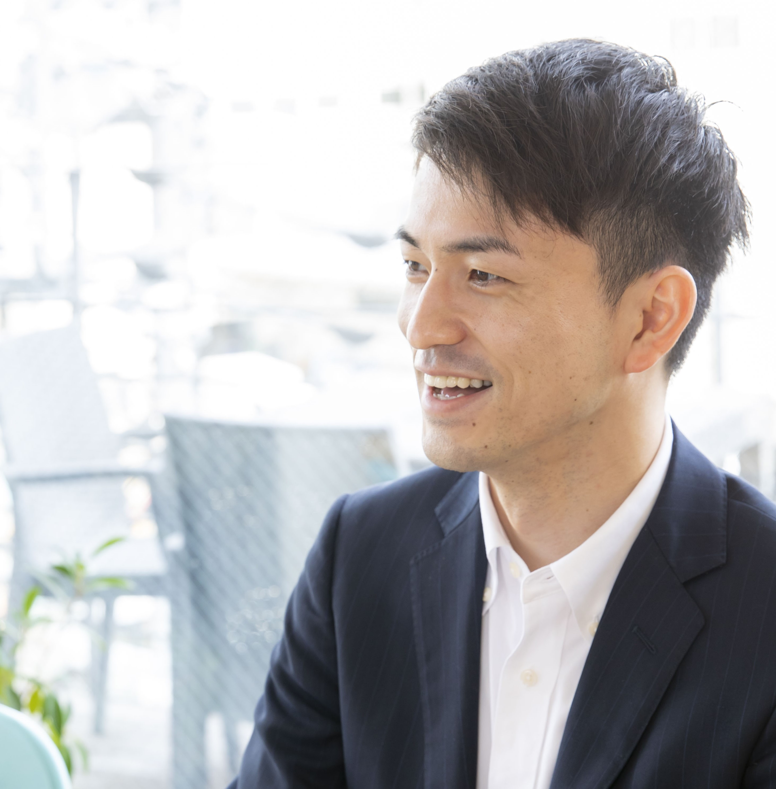

PROFILE

NAME：ウメザワ シュウタ
BIRTH：1994
略歴：
フットサルプレーヤーとして活動するため、20歳時にイタリアへと渡り1年間活動。
帰国後は大阪、仙台で活動し、23歳時に引退。
パソコン教室の教室責任者からキャリアをスタートさせ、コンビニ専門の経営コンサルタントを経て、
社内SEとしての現在にいたる。


EXPERIENCE
在籍期間：2022～現在
株式会社NGK
社内SE
●kintone構築・運用
・要求整理
・要件定義
・要件定義書など各種ドキュメント作成
・カスタマイズファイル作成（javascript）
・マニュアル作成
●MA（マーケティングオートメーション）ツール活用
●人事情報システム開発PjM
・市場調査
・ベンダーとのコミュニケーション
・要求整理
・要件定義
・要件定義書など各種ドキュメント作成
・マニュアル作成
・ユーザー説明会の実施
・ヘルプサイト制作→改善点分析
・ヘルプデスク
・ユーザインタビュー
・インシデント管理 体制構築・運用
・SLO/利用規約の作成
・サポートツールの作成(Excel VBA)
●業務効率化プログラムファイルの作成（Excel）
在籍期間：2020～2022
株式会社セブン-イレブン・ジャパン
FC加盟店のオーナー様とともに、店舗ごとの売上/利益を改善する経営相談員
在籍期間：2017～2020
株式会社イー・トラックス
初中級者向けのパソコン教室の教室責任者
＊2022年に「Enter IT Support」を開業し、個人事業としてkintone運用支援を2社に対して実施
QUALIFICATIONS
・ITパスポート
・Excel VBAスタンダード
・統計検定2級
・kintone カスタマイズSP
・kintone アプリデザインSP
・イタリア語検定 3級
EDUCATION
私立日本大学付属藤沢高等学校 卒業
私立玉川大学リベラルアーツ学部リベラルアーツ学科 中退 → 渡伊
電気通信大学高度技術研修『独り立ちデータサイエンティスト 養成講座』 修了
●ITリテラシ
・GCPでVM作成
・ssh通信を使ったリモート・サーバへのアクセス
・文字コードと正規表現
・TCP/IPとhtml概論
・GitやGit Hubの利用
・SQL入門
●データサイエンス Python100本ノック（構造化データ加工編）
●EDAとモデル作成の基礎
●モデル作成→kaggle参加
Google colaboratoryでPythonを扱い、「不動産価格予測モデル(回帰モデル)」「飲料購入予測モデル（判別モデル）」を作成
●統計検定2級 取得